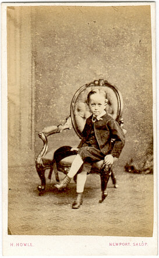

Monday, March the 5th, 2007
back to: title, date or indexes

Hast thou gumption, my child?
I have oodles of gumption, O mighty Prince!
And hast thou vim?
My gumption is matched only by my vim, O Prince!
Then thou shalt not wilt with weediness when I send thee hence to the huge and terrifying fiery Mountains of Awfulness?
I merely await your word of command, O Prince, and I shall be on my way.
Thou hast gumption and vim indeed, tiny one!
What is it you would have me do when I reach the Mountains of Awfulness, O mighty one?
Come close, small heroic person, and I shalt breathe into thine ear what thou must do. Psst psst psst psst psst.
Gosh! I understand, O ye who command me to go hence to the huge and terrifying fiery Mountains of Awfulness and there to subjugate the legions most foul of terrifying fiery Demons that therein do dwell, armed as I am with the Pin-cushion of Righteousness.
Thou speakest well, my child. Go then hence.
I shall go. I shall bestride my horse that is known as the Big Frightening Horse That Gallops, and you shall watch us vanish in the dust as we ride into the sunset, heading for the huge and terrifying fiery Mountains of Awfulness.
Yea, young tinker, that I shall.
[Next week : More thrills and spills as the Big Frightening Horse That Gallops gets lost in a gulch only half way to the huge and terrifying fiery Mountains of Awfulness.]
Hooting Yard on the Air, April the 4th, 2007 : “Unspeakable Desolation Pouring Down From the Stars, Chapter Thirteen” (starts around 14:39)